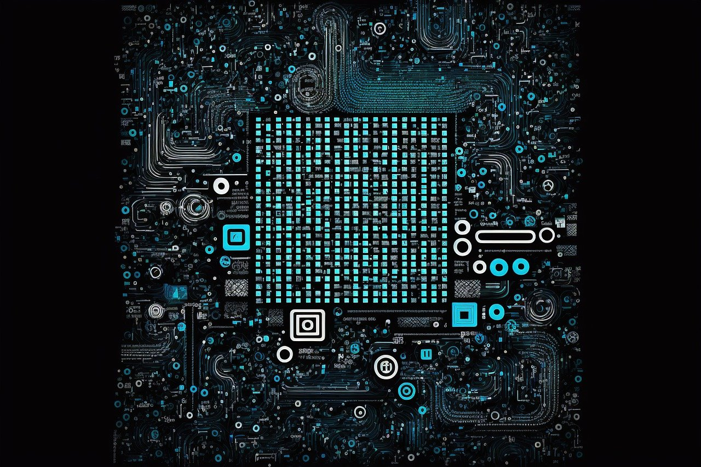

반도체란 전기전도도가 도체와 절연체의 중간성질을 가진 물질이다. 원래 순수 반도체는 전기전도도가 낮은 절연체와 더 가까운 성질을 가지고 있지만 13족 혹은 15족 원소를 화학적으로 가함으로서 도체처럼 전기가 잘 흐르는 성질을 가지게 만들 수 있다. 즉, 비저항을 낮출 수 있다. 이처럼 순수 반도체에 의도적으로 불순물을 첨가하여 전기적인 특성을 조절하는 것을 도핑이라고 한다. 따라서 도핑과 같은 인공적인 조작이 가능한 반도체는 비정항치를 조절할 수 있어 많은 제품과 기술에 용이하게 사용된다.
